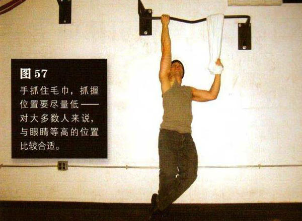
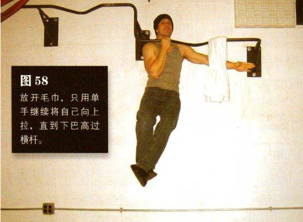

在横杆上搭一条毛巾，向上跳起，单手以最容易发力的姿势抓住横杆，悬挂的毛巾位于另一只手的那一侧。用那只手抓住毛巾，抓握位置要尽量低——对大多数人来说，与眼睛等高的位置比较合适。双膝弯曲，脚踩交叠在一起并置于身后。双肩收紧，抓握横杆的那只手臂要微微弯曲
然后将自己拉起来——前一半动作中，即从起始姿势到抓握横杆那只手臂弯曲成直角的过程中，另一只手都要拉毛巾以协助完成动作。此后放开毛巾，只用单手继续将自己向上拉，直到下巴高过横杆（图 58）。暂停一下，然后仅用单手的力量放低身体。在动作的最低点时再抓住毛巾。暂停，再重复动作。
抓握毛巾的那只手的位置越低，就越难提供助力。如果你不能做 5 次反复，那就升高抓握毛巾的位置，使其更靠近横杆一点儿。等你变得更强以后，就可以降低抓握毛巾的位置。最后，你会感觉到自己是在向下“推”毛巾，而不是“拉”毛巾，这样你的身体就能在这个动作中变得越来越强，并为练习最终式——单臂引体向上——做好准备。
初级标准：1 组，3 次
中级标准：2 组，各 5 次
高级标准：2 组，各 7 次